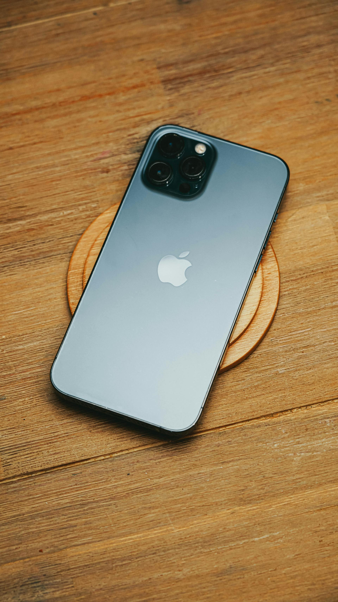
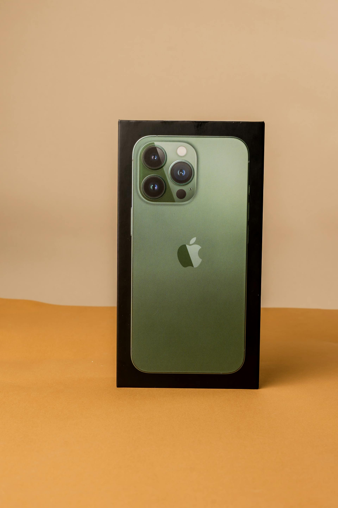
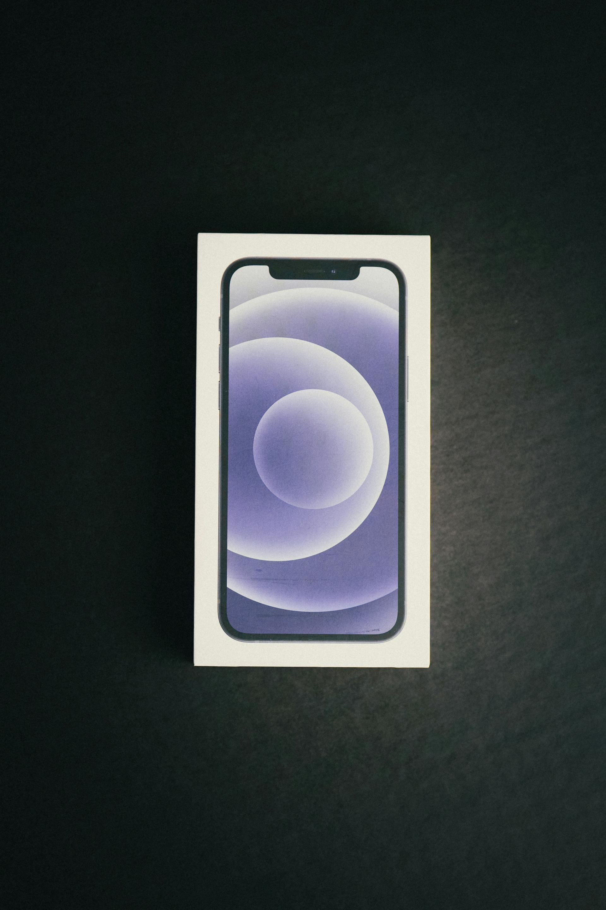

Máxima calidad garantizadas
|  |
Iphone 14 Pro Descripción Pantalla Super Retina XDR con tecnología ProMotion para una experiencia visual incomparable. Chip A16 Bionic, el procesador más potente y eficiente de Apple hasta ahora. Sistema de cámaras Pro con modo Cinemático y fotografía en baja luz, perfecto para creadores de contenido. Dynamic Island, una nueva forma interactiva de recibir notificaciones y controlar tus aplicaciones. Diseño elegante y duradero con acabados en acero inoxidable y vidrio Ceramic Shield. Precio: $900.000 Estado: Seminuevo Categoría: A+ |
|  |
Iphone 13 Pro Descripción Descubre el iPhone 13 Pro Max, el smartphone más avanzado de su generación. Con una pantalla Super Retina XDR de 6.7 pulgadas, chip A15 Bionic ultra rápido, y un sistema de cámaras Pro para fotos y videos espectaculares, lleva tu experiencia al siguiente nivel. Diseño premium, batería de larga duración y tecnología 5G para estar siempre conectado. Precio: $850.000 Estado: Seminuevo Categoría: B+ |
|  |
Iphone 12 Pro Max Descubre el iPhone 12 Pro Max, el smartphone más avanzado de su generación. Con una pantalla Super Retina XDR de 6.7 pulgadas, chip A15 Bionic ultra rápido, y un sistema de cámaras Pro para fotos y videos espectaculares, lleva tu experiencia al siguiente nivel. Diseño premium, batería de larga duración y tecnología 5G para estar siempre conectado.Precio: $790.000 Estado: Nuevo Categoría: Nuevo |